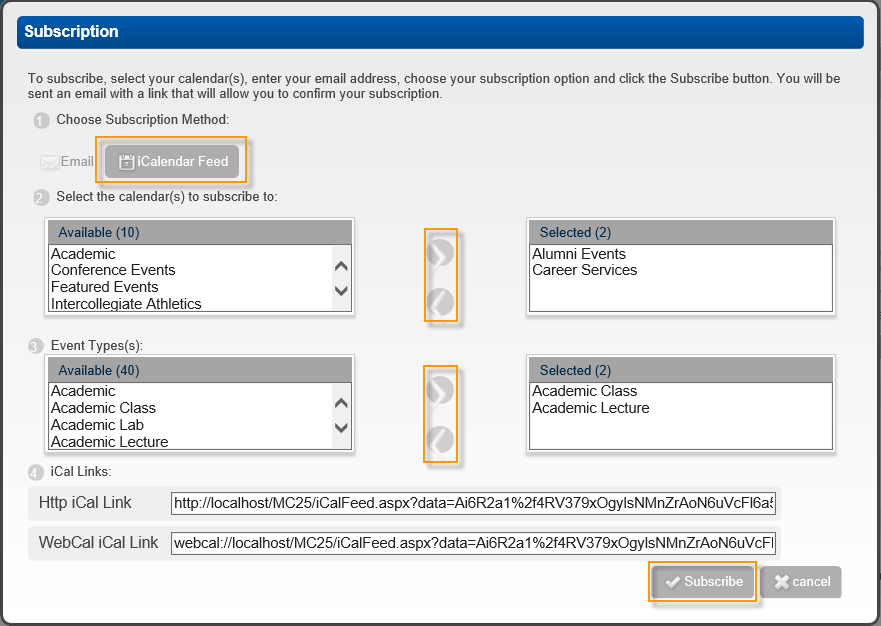

Subscribe to a Calendar Using iCal
Once you have begun the process of subscribing to a Calendar, you can choose to subscribe via iCal.
- From the Subscription page, select the iCalendar option and click Subscribe.

- When prompted to choose if you want to allow this website to open a program on your computer. Click Allow.
- When prompted to choose if you want to add this Internet Calendar to your email program (in this example, Microsoft Outlook) and subscribe to updates.
- Optionally, click Advanced to open a Subscriptions dialog box and customize the settings for your subscription on your email program.
- Click Yes to add the calendar or calendars to your email program.